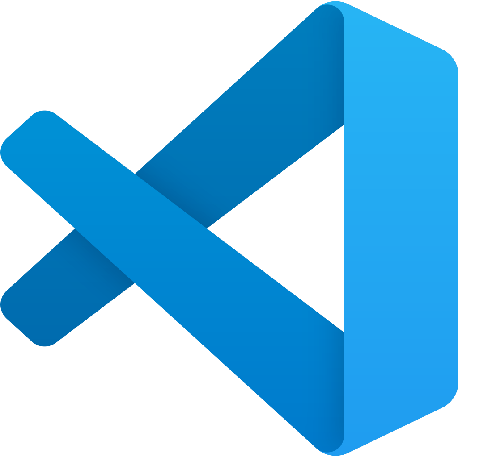
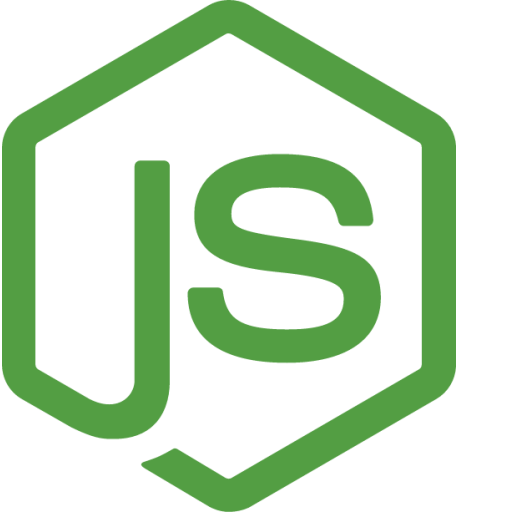

7.3. Software necesario¶
A la hora de trabajar con Laravel, necesitamos tener previamente instalados en nuestro sistema una serie de recursos software, como son:
- Un IDE (entorno de desarrollo) con el que editar el código de nuestros proyectos. Emplearemos el editor de código
Visual Studio Codeen estos apuntes, aunque existen otras alternativas similares, como PHPStorm, Sublime Text, Atom, etc. - Un servidor web que soporte PHP. En nuestro caso, utilizaremos
Apache. - Un servidor de bases de datos en el que almacenar la información de nuestras aplicaciones. Emplearemos un servidor
MariaDB/MySQL. - PHP actualizado a una versión compatible con la versión de Laravel que vayamos a utilizar. Por ejemplo, para Laravel versión 9 se necesita una versión de
PHP 8.0o posterior. - El propio framework
Laravel. Se necesitará también instalar la herramientaComposerpara, después, instalar Laravel. Aunque también se pueden crear proyectos Laravel desde la propia herramientaComposer, como veremos más adelante. - Además, necesitaremos el gestor de paquetes
npmpara instalar dependencias del lado del cliente en proyectos Laravel. Este gestor se instala con el frameworkNode.js. - Otras herramientas adicionales que nos puedan venir bien, como por ejemplo alguna herramienta para probar el acceso a los servicios REST que desarrollemos.
A continuación se muestran los pasos necesarios para instalar todo el software que utilizaremos. Se darán las pautas de instalación en un sistema Linux basado en Debian, como por ejemplo Ubuntu, Lubuntu, Linux Mint, etc. También se facilitará un enlace a una máquina virtual donde poder instalar todo el software, así como otra máquina virtual con el software ya preinstalado y listo para utilizarse, usando las versiones que se indican a lo largo del documento.
Para usuarios de otros sistemas, como Windows o Mac OSX, la mayoría de opciones que veremos aquí son igualmente válidas (cambiando la ruta y/o el modo de instalación de algunas herramientas). En cualquier caso, se puede hacer uso de otras herramientas alternativas, como por ejemplo:
- Laragon para Windows, un sistema que integra los componentes de los puntos 2 a 6 vistos anteriormente (servidor web, de base de datos, PHP, Node, etc).
- Laravel Homestead, un ecosistema basado en máquinas virtuales que también integra distintos componentes necesarios para desarrollar aplicaciones Laravel, aunque más complejo de instalar y configurar que Laragon o los pasos que seguiremos aquí en la máquina virtual.
Para el software de este módulo
Después de explicar el software necesario, y por simplificar la instalación, y que, además, no es el propósito de este módulo DWES aprender a instalar todo el software en todos los sistemas posibles, el profesor seguirá la instalación de proyectos mediante Laragon.
En cualquier caso, y por las mismas razones explicadas en el punto anterior, si no se quiere instalar ningún software, se proporciona la máquina virtual indicada, para simplificar las opciones.
1) Visual Studio Code¶

Como editor de código para desarrollar nuestras aplicaciones emplearemos Visual Studio Code, uno de los más versátiles que existen hoy en día para desarrollo web.
Desde la web oficial de Visual Studio Code podemos descargarlo para la plataforma deseada.
Versión requerida
Ninguna en particular, sirve con la última versión disponible.
Instalar VS Code según el sistema operativo
En el caso de nuestra máquina virtual o una distribución similar, descargaremos un archivo .deb. Una vez descargado, accedemos por terminal a la carpeta donde esté y ejecutamos este comando para instalarlo:
sudo dpkg -i nombre_del_archivo.deb
Para Windows descargamos el instalador y seguimos los pasos. No hay mucho que configurar; en todo caso, podemos dejar marcada la casilla para añadir el menú contextual “Abrir con Code” para poder abrir archivos y carpetas con VS Code desde el explorador de archivos directamente, con un clic derecho.
Para Mac OSX, descargamos la aplicación y la podemos ejecutar directamente. También podemos moverla a la carpeta de Aplicaciones para tenerla localizada.

Extensiones para VS Code
Independientemente del sistema operativo a utilizar, será recomendable instalar las siguientes extensiones (además de las ya instaladas en el punto 7 de la unidad temática 1) para Visual Studio Code.
Referentes a PHP:
- Composer: para administrar dependencias en proyectos PHP. Esta extensión facilita la ejecución de comandos de Composer directamente desde VSCode, lo que simplifica la gestión de paquetes y la instalación de dependencias.
Referentes a Laravel:
- Laravel Blade Snippets: extensión de VSC que proporciona fragmentos de código para el lenguaje de plantillas Blade de Laravel. Con esta extensión, puedes escribir código Blade más rápido y eficientemente. Proporciona fragmentos de código para estructuras de control, directivas Blade y mucho más.
- Laravel Snippets: extensión de VSC que proporciona fragmentos de código para Laravel. Con esta extensión, puedes escribir código Laravel más rápido y eficientemente. Proporciona fragmentos de código para estructuras de control, migraciones de bases de datos, Eloquent ORM y mucho más.
- Laravel goto view: extensión de VSC que agrega un comando "ir a la vista" a tu editor de código. Con esta extensión, puedes ir directamente a la vista que se corresponde con el controlador que estás editando. Esto ahorra mucho tiempo al navegar por el código de tu aplicación.
- Laravel Artisan: extensión de VSC que te permite ejecutar comandos Artisan directamente desde tu editor de código. Con esta extensión, puedes generar código automáticamente, migrar la base de datos y mucho más. También puedes ver la salida de los comandos Artisan directamente en tu editor de código.
- Laravel Extra Intellisense
Referentes a API:
-
Thunder Client: para simular peticiones a servidores web, y recoger y analizar la respuesta. La emplearemos para probar los servicios REST que desarrollaremos en algunas sesiones. Se instala como una extensión de Visual Studio Code. Se busca desde el panel de extensiones y se instala:

Extensión Thunderclient en Visual Studio Code. Aparecerá un icono en el panel izquierdo desde el que gestionar las conexiones y peticiones (aprenderemos a utilizarlo más adelante):
Como alternativa, también podemos utilizar la herramienta Postman, o bien vía web o instalando la aplicación de escritorio desde su web oficial.
2-3-4) Apache, PHP y MariaDB/MySQL con XAMPP¶
Para poder tener un sistema con Apache, PHP y un gestor de bases de datos (como MariaDB/MySQL), y poderlo gestionar cómodamente, trabajaremos con un sistema AMPP, paquetes que integran en una sola instalación todas estas cosas. El ejemplo más conocido de estos sistemas es XAMPP (aunque existen otros como WAMPP, para Windows). Una de las ventajas que ofrecen es que, además de instalar Apache, PHP y MySQL y dejarlo todo integrado, nos proporciona un cliente web llamado phpMyAdmin para poder administrar las bases de datos desde Apache (ayudará para crear o importar las bases de datos de los distintos ejercicios).
Versión requerida
Depende sobre todo de la versión de Laravel con la que vayamos a trabajar. En el caso por ejemplo de Laravel 9, es necesario tener al menos una versión de PHP 8.0, y para ello debemos contar con una versión de XAMPP 8.x.
Instalando XAMPP¶
Para instalar XAMPP, basta con descargarlo de su web oficial y seguir los pasos del asistente. Será suficiente con tener instalado Apache, MySQL, PHP y phpMyAdmin, así que podemos descartar otras opciones que nos ofrezca (si nos da a elegir).
Instalar XAMPP
En el caso de Linux, debemos dar permisos de ejecución y ejecutar el archivo .run que descarguemos desde algún terminal, con permisos de administrador (sudo). Suponiendo que el archivo se llame xampp-linux-x64-7.4.5-installer.run, por ejemplo, los pasos son los siguientes (desde la carpeta donde lo hemos descargado):
sudo chmod +x xampp-linux-x64-7.4.5-installer.run
sudo ./xampp-linux-x64-7.4.5-installer.run
En el caso de Windows o Mac OSX simplemente hay que lanzar el instalador y seguir los pasos, eligiendo las opciones que nos interese instalar (al menos, Apache, MySQL y PHP), si nos dan a elegir. Así es como podemos dejarlo en el caso de Windows, por ejemplo:
El manager de XAMPP¶
XAMPP proporciona una herramienta manager o panel de control que nos permite gestionar en todo momento los servicios activos. El manager nos permitirá lanzar o detener cada servidor.
Para las pruebas que haremos deberemos tener iniciados tanto Apache como MySQL.
Herramienta Manager de XAMPP
En el caso de Linux se encuentra en /opt/lampp/manager-linux-x64.run. Podemos acceder a la carpeta desde el terminal para ejecutarlo (con permisos de superusuario).
Crear acceso directo
O bien crear algún acceso directo en otra ubicación que nos resulte más cómoda. Por ejemplo, podemos crear un acceso directo en el escritorio con el editor nano o con el propio editor Visual Studio Code que hemos instalado previamente. Suponiendo la carpeta /home/alumno/Escritorio/ o /home/alumno/Desktop/, como la que tenemos en la máquina virtual, podemos primero crear el archivo vacío:
touch /home/alumno/Desktop/XAMPP.desktop
[Desktop Entry]
Encoding=UTF-8
Name=Manager XAMPP
Comment=Manager XAMPP
Exec=sudo /opt/lampp/manager-linux-x64.run
Icon=/opt/lampp/htdocs/favicon.ico
Categories=Aplicaciones;Programación;Web
Version=8.1.6
Type=Application
Terminal=1
Version) dependerá de la versión que hayamos instalado de XAMPP en el momento concreto.El atributo
Terminal lo ponemos a 1 para poder especificar el password de superusuario al ejecutar, de lo contrario no funcionará.
Tendrá una apariencia como ésta aproximadamente:

En el caso de Windows, dicho manager está en la carpeta de instalación (típicamente C:\xampp), en un archivo llamado xampp-control.exe, que podemos ejecutar.
La apariencia es bastante funcional:
En el caso de Mac OSX, se habrá creado un acceso en la sección de Aplicaciones para poder poner en marcha este manager.
Por defecto, Apache estará escuchando en el puerto 80 (o 443 para conexiones SSL), y MySQL en el 3306. Podemos modificar estos puertos en los respectivos archivos de configuración (“httpd.conf” y “my.cnf”), dentro de las carpetas de la instalación de XAMPP (la ubicación concreta de estos archivos varía entre versiones y entre sistemas operativos).
5) Laravel¶
Para trabajar con Laravel, será necesario instalar el gestor de paquetes Composer mediante el que podremos tanto crear proyectos Laravel como gestionar las dependencias de otros módulos en un proyecto.
Versión requerida
En la última actualización de estos apuntes, se dispone de la versión 2.3.x de la herramienta Composer y de la versión 9.x de Laravel.
Instalando Composer¶
Como hemos comentado, la instalación de Laravel se realiza a través del gestor de paquetes Composer. Esta es una herramienta muy habitual en ecosistemas PHP, y su labor es similar a la que desempeña el gestor NPM para aplicaciones JavaScript: gestionar las dependencias de un determinado proyecto, descargando, actualizando o desinstalando los paquetes necesarios. En este caso, lo utilizaremos para descargar e instalar el propio framework Laravel.
Composer puede instalarse localmente para cada proyecto web, o de forma global para todo el sistema. Esta última opción es la recomendable en el caso de querer gestionar varios proyectos en nuestro equipo, para no tener que instalarlo en todos ellos.
Instalación
Para instalar Composer en Linux y Mac OSX, debemos descargar el archivo composer.phar de la web oficial y copiarlo renombrado a composer desde donde lo hayamos descargado a alguna carpeta que forme parte del PATH del sistema, y activarlo como ejecutable. Por ejemplo:
mv composer.phar composer
sudo mv composer /usr/local/bin/composer
sudo chmod +x /usr/local/bin/composer
Como último paso, y ya que Composer utiliza el ejecutable de PHP, necesitamos que dicho ejecutable esté también en el PATH del sistema.
- Para Linux deberemos hacer lo siguiente:
echo "export PATH=$PATH:/opt/lampp/bin" >> ~/.bashrc
source ~/.bashrc
echo "export PATH=/Applications/XAMPP/xamppfiles/bin:$PATH" >> ~/.bash_profile
source ~/.bash_profile
Además, en el caso de Mac OSX quizá tengamos que editar el archivo de configuración de PHP (/Applications/XAMPP/xamppfiles/etc/php.ini) y añadir esta línea al final, para permitir que el comando PHP gestione la memoria:
pcre.jit=0
Para instalar Composer en Windows debemos hacerlo a través de un instalador que también podemos descargar desde la web oficial, en la sección Windows Installer. Seguimos los pasos del asistente, y deberemos indicar la ruta donde se encuentra el comando php, necesario para poder utilizar la herramienta.
Añadimos este comando al PATH del sistema también (Add This PHP to your path?):
Comprobación de la instalación
Una vez instalado, podemos ejecutar el comando composer sin más en un terminal, y comprobar que muestra una salida con las opciones que ofrece:
Instalando Laravel¶
A través de la herramienta composer se pueden crear directamente proyectos Laravel, como veremos en el curso. Sin embargo, la sintaxis del comando de creación es algo larga, si la comparamos con el instalador de Laravel, por lo que vamos a instalarlo también. Para hacerlo, usamos la propia herramienta composer, con este comando:
composer global require laravel/installer
Instalación
echo "export PATH=$PATH:$HOME/.config/composer/vendor/bin" >> ~/.bashrc
source ~/.bashrc
PATH es $HOME/composer/vendor/bin en lugar de la anterior.Para Linux y Mac OSX, deberemos añadirlo al PATH del sistema (en realidad, añadimos la carpeta con las utilidades que composer instala de forma global al sistema).
En el caso de Windows, este comando ya deja el instalador laravel listo para poderse ejecutar desde terminal.
echo "export PATH=$PATH:$HOME/.composer/vendor/bin" >> ~/.bash_profile
source ~/.bash_profile
PATH del sistema (en realidad, añadimos la carpeta con las utilidades que composer instala de forma global al sistema).
Con esto, se habrá instalado un comando llamado laravel, que podemos utilizar a partir de ahora para crear los proyectos. Podemos probar a ejecutarlo en un terminal para que nos muestre las opciones disponibles, lo que indicará que está correctamente instalado y localizado.
Actualizando Laravel¶
En general, el comando laravel que se instala se encargará de crear proyectos empleando la última versión de Laravel que haya disponible. Así, si por ejemplo lo instalamos cuando aún existía la versión 7 de Laravel pero se publica la versión 8, automáticamente el comando laravel nos permitirá crear proyectos de la versión 8 desde ese punto. Sin embargo, es posible que con el tiempo se requiera actualizar el instalador para que los proyectos con nuevas versiones se sigan creando sin problemas.
Para poder actualizar a la versión más reciente de Laravel, tenemos dos opciones, aunque es cierto que ninguna de ellas está recogida en la documentación oficial de Laravel, y lo que aquí se menciona se basa en recomendaciones de webs externas a Laravel.
La primera forma de actualizar es utilizar el comando de actualización:
composer global update laravel/installer
Sin embargo, esta opción puede no ser suficiente si el cambio es demasiado brusco (por ejemplo, pasar de Laravel 5 a Laravel 7), ya que algunas dependencias que también haya instaladas harían inviable el cambio. En este caso, podemos optar por quitar la versión instalada por completo, e instalar la reciente:
composer global remove laravel/installer
composer global require laravel/installer
6) Node.js¶

A pesar de que podría parecer que Node.js es un ecosistema diferente a Laravel, lo cierto es que con la instalación de Node se incorpora una herramienta muy útil en cualquier aplicación web que utilice librerías JavaScript, como puedan ser Bootstrap o jQuery. Es la herramienta NPM (Node Package Manager), que permite instalar de forma sencilla estas librerías en cualquier proyecto.
Versión requerida
Es recomendable tener instalada la última versión LTS (Long Term Support). En la última versión de estos apuntes, dicha versión es la v20.17.0.
Para instalar Node en cualquiera de los sistemas que estamos contemplando (Linux, Windows o Mac OSX) podemos optar por:
- opción a) Instalarlo a través del instalador correspondiente.
- opción b) Utilizar la herramienta NVM (Node Version Manager). Esta herramienta nos va a permitir tener más de una versión de Node instalada, y poder elegir en todo momento cuál de ellas es la que queremos tener activa. En el caso de Windows, la herramienta NVM que podemos utilizar no es la “oficial”, pero sí existe una especie de clon alternativo funcional.
Instalación
En el caso de distribuciones Linux, como es el caso de la máquina virtual proporcionada, podemos optar por ejecutar un instalador o por usar NVM. En la versión completa de la máquina virtual proporcionada se ha optado por esta última opción (NVM), pero damos aquí los pasos a seguir para ambas opciones.
opción a) de instalador
Si optamos por instalar Node.js a través de un instalador, los pasos a seguir son:
- En primer lugar, si no tenemos instalada la herramienta
curl, la instalamos con:sudo apt-get install curl - Después, utilizamos
curlpara recuperar la versión de Node que queramos (versión LTS actual, 14.x):curl -sL https://deb.nodesource.com/setup_16.x | sudo -E bash - - Finalmente, instalamos Node.js
sudo apt-get install -y nodejs
Si quisiéramos actualizar la versión de Node.js en un futuro, bastaría con repetir los dos últimos comandos, poniendo en el paso 2 la versión a obtener en este caso.
opción b) NVM
Podemos consultar información de esta herramienta en su web oficial en GitHub. Para instalarla, debemos descargarla con el comando curl o wget, según se explica en la propia web de GitHub. Si optamos por wget, el comando es como sigue (en una sola línea):
wget -qO- https://raw.githubusercontent.com/nvm-sh/nvm/v0.39.1/install.sh | bash
wget instalado, podemos o bien instalarlo, o bien emplear este otro comando equivalente, con la orden curl (también en una sola línea):
curl -o- https://raw.githubusercontent.com/nvm-sh/nvm/v0.39.1/install.sh | bash
Número versión
El número de versión v0.39.1 puede variar. Es preferible consultar la web de GitHub para obtener el comando actualizado.
Después de ejecutar el comando anterior, será necesario cerrar el terminal y volverlo a abrir para poder utilizar el comando nvm. Si sigue sin reconocer el comando, quizá debamos actualizar con source ~/.bashrc
opción a) de instalador
El instalador de Node.js para Windows es igualmente muy sencillo. Lo descargamos de la web oficial de Node y lo lanzamos. Si queremos actualizar versión en un futuro, basta con volver a descargar esa última versión y lanzar el instalador correspondiente para actualizarla.
opción b) NVM
Como comentábamos, la herramienta NVM oficial sólo está disponible para sistemas Unix, por lo que funciona en Linux y Mac OSX, pero no en Windows. Como alternativa, existe alguna implementación paralela de nvm que podemos hacer servir, como esta. Podemos descargar un instalador (nvm-setup.zip) y ejecutarlo para instalar este gestor. Después, desde línea de comandos tendremos disponibles una serie de comandos para gestionar las versiones de Node, como veremos a continuación.
Para distribuciones Mac OSX, tenemos igualmente la opción de usar un instalador o la herramienta NVM.
opción a) instalador
El instalador de Node.js para Mac OSX es muy sencillo. Lo descargamos de la web oficial de Node y lo lanzamos. Si queremos actualizar versión en un futuro, basta con volver a descargar esa última versión y lanzar el instalador correspondiente para actualizarla.
opción b) NVM
Para utilizar NVM en Mac OSX seguimos los mismos pasos que para Linux, comentados anteriormente, pero en este caso para actualizar el terminal ejecutaremos source ~/.bash_profile.
Comandos para Node con instalación NVM (opción b)
Si hemos optado por instalar Node a través de nvm (opción b), tendremos disponibles una serie de comandos en el terminal para instalar y gestionar las versiones de Node. Aquí resumimos los más importantes.
En el caso de estos sistemas, habremos instalado la versión oficial de NVM, y los comandos que podemos utilizar son estos:
- nvm install node: instala la última versión disponible de Node
- nvm install --lts: instala la última versión LTS disponible
- nvm install 12.16.0: instala la versión especificada de Node
- nvm uninstall 12.16.0: desinstala la versión especificada de Node
- nvm ls-remote: muestra todas las versiones disponibles para instalar
- nvm list: muestra todas las versiones instaladas localmente
- nvm current: muestra la versión actualmente activa
- nvm use 12.16.0: marca la versión indicada como actualmente activa
- nvm use --lts: marca como activa la última versión LTS instalada
En nuestro caso, vamos a instalar la última versión LTS disponible, ya que éstas son las versiones que tienen soporte a largo plazo. Por lo tanto, ejecutaremos los comandos:
nvm install --lts
nvm use --lts
Comando
nvmEl comando
nvm use normalmente no es necesario, ya que la instalación automáticamente deja como activa la versión que elegimos. Pero si el terminal no termina de reconocer el comando node puede ser necesario ejecutarla.
En el caso de Windows con la versión alternativa de NVM, los comandos son ligeramente diferentes:
- nvm install 12.16.0: instala la versión especificada de Node
- nvm uninstall 12.16.0: desinstala la versión especificada de Node
- nvm list: muestra todas las versiones instaladas localmente
- nvm list available: muestra todas las versiones disponibles para instalar con esta adaptación de NVM.
- nvm use 12.16.0: marca como activa la versión de Node especificada (previamente instalada).
Para instalar la versión LTS disponible, tendremos que ver su número en la web oficial de Node, y luego ejecutar el comando correspondiente. Por ejemplo:
nvm install 16.16.0
nvm use 16.16.0
Prueba de Node¶
Podemos ejecutar ahora node -v en el terminal y comprobar que nos muestra el número de versión adecuado.
También podemos ejecutar el comando npm - v para comprobar la versión que se ha instalado del gestor NPM (que no tiene por qué coincidir con la de Node).
7) Recursos adicionales¶
Para facilitar la labor de instalar y/o trabajar con el software propuesto, se proporcionan dos máquinas virtuales basadas en sistemas Lubuntu (versión 20). En ambos casos, se cuenta con un usuario alumno con password alumno.
Es necesario utilizar el programa VirtualBox para ejecutar estas máquinas virtuales. También se puede cambiar la configuración por defecto de dichas máquinas virtuales, para darles más memoria RAM o núcleos de procesador, si se cree conveniente.
Tarea 1: Instalar Laragon
Laragon es un entorno de desarrollo local para aplicaciones web (similar a XAMPP, WAMP o MAMP), pero más optimizado, modular y portable. Se usa principalmente en Windows para montar servidores locales de forma rápida y sencilla.
Está pensado para programadores que trabajan con PHP, Node.js, Python, Java, Ruby o similares, y permite levantar un stack completo con pocos clics, sin necesidad de configuraciones complicadas.
Características principales
-
Portable → se puede instalar en cualquier carpeta o incluso en un USB.
-
Ligero y rápido → arranca en segundos y consume pocos recursos.
-
Soporte para múltiples versiones de PHP/MySQL que puedes intercambiar fácilmente.
-
Hosts virtuales automáticos → puedes acceder a un proyecto como http://miapp.test en lugar de localhost/miapp.
-
Terminal preconfigurada con comandos de Composer, Git, npm, etc.
-
SSL automático con certificados auto-generados.
Componentes que instala Laragon (edición "Full")
-
Dependiendo de la versión que descargues (Full o Lite), incluye diferentes herramientas. La versión Full suele traer:
-
Apache o Nginx (servidor web, seleccionable).
-
MySQL o MariaDB (gestor de bases de datos).
-
PHP (con varias extensiones útiles ya activadas).
-
phpMyAdmin o HeidiSQL (gestión de bases de datos).
-
Node.js (incluyendo npm).
-
Git (control de versiones).
-
Composer (gestión de dependencias PHP).
-
Redis / Memcached (opcional, para caché).
-
Mail Catcher (MailHog) → simula el envío de correos en local.
-
Además, puedes añadirle fácilmente otros servicios como:
-
PostgreSQL
-
MongoDB
-
Python, Ruby, Java
-
Elasticsearch, RabbitMQ, etc.
-
Instalar Para descargar la última versión Full pincha aquí.
Ejercicios a realizar
Ejercicio 1Ejercicio 2